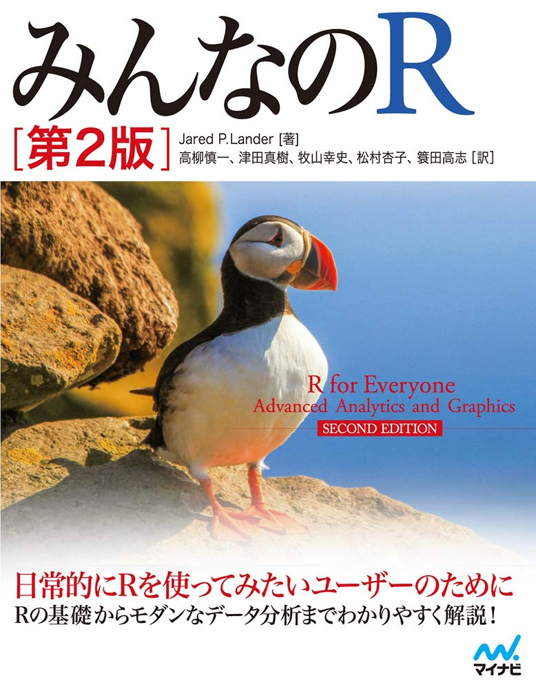

ミクロ政治データ分析実習
概要
- 講義日: 木曜日 第4時限（14:40～16:10）
- 場所: TC302教室（高槻キャンパス C棟 302教室）
- 講義内容: Rの使い方
- Rの基本的な操作 & R Markdown
- データの入出力
- データのハンドリング（前処理）
- データの可視化
- 統計学、確率、多変量解析、因果推論の授業ではない。
- データ分析の手法は後期の「マクロ政治データ分析実習」で紹介する。
- 後期の授業ではRの使い方について解説しない。
- 到達目標: Rを用いたデータ分析の教科書が読める土台づくり
オフィス・アワー
宋、またはTAが研究室に待機し、事前予約なしに相談、質問などが可能な時間
- 場所：TA227研究室（A棟の2階）
- 毎週水曜日2限 (10:40〜12:10)
- 宋が対応
- 毎週木曜日3・5限 (13:00〜14:30 / 16:20〜17:50)
- 宋・TAが対応
- 上記の時間外は事前予約が必要（メール、対面）
- メール: song@kansai-u.ac.jp
講義内容
| 回 | 内容 | 教科書 | 課題（予定） |
|---|---|---|---|
| 1 | イントロダクション | ||
| 2 | RとIDEの導入 | 第1〜5章 | |
| 3 | Rの基本的な操作 | 第6章 | |
| 4 | プログラミングの基本的な概念 | 第10〜11章 | |
| 5 | R Markdownと再現可能な研究 | 第21章 | \(\bigcirc\) |
| 6 | データ収集 | ||
| 7 | データ型 | 第8章 | |
| 8 | データ構造 | 第9章 | |
| 9 | データハンドリング（1） | 第12・14章 | |
| 10 | データハンドリング（2） | 第13・14章 | \(\bigcirc\) |
| 11 | データハンドリング（3） | 第15章 | \(\bigcirc\) |
| 12 | 可視化（1） | 第17章 | |
| 13 | 可視化（2） | 第18〜19章 | \(\bigcirc\) |
| 14 | 可視化（3） | 第18〜19章 | \(\bigcirc\) |
| 15 | 期末テスト |
前提知識
- ファイル・システムの理解
- フォルダー (ディレクトリ)の概念
C:/AAA/BBB/CCC.txt(Windows)や~/AAA/BBB/CCC.text(macOS / Linux)の意味が理解できること- 相対パス / 絶対パスの概念が理解できること
- ブラインド・タッチ (重要)
- 期末レポートは第15回の授業中に執筆する。
- タイピングが遅いと、時間内に期末レポートの完成ができない。
- 第15回の授業までにブラインドタッチの練習を推奨
- この授業に限らず、現代社会で極めて重要なスキル
教科書
Song Jaehyun・矢内勇生.『私たちのR: ベストプラクティスの探求』Web-book
- https://www.jaysong.net/RBook
- 本講義内容を200%カバーする
- 無料

参考書
- 松村優哉 他. 2021. 『改訂2版 RユーザのためのRStudio[実践]入門』技術評論社
- Garrett Grolemund and Hadley Wickham. 2017. R for Data Science. O’Reilly.
- 邦訳『Rではじめるデータサイエンス』(原著は無料: https://r4ds.had.co.nz/)
- Jared P. Lander. 2018. R for Everyone. Addison-Wesley Professional.
- 邦訳『みんなのR』



成績評価
- 平常点: 30%
- 学生証を持参すること（カードリーダーで出席を確認）
- 欠席4回以上は評価の対象外（3回まで評価対象）
- 課題: 40%
- 計5〜6回の課題を予定
- 未提出3回以上は評価の対象外（2回まで評価対象）
- 課題提出期限の延長はない（提出までの期間が長めであるため）
- 提出期限は次回講義の前日23時59分まで
- 期限内に提出出来なかった場合でも宋に連絡する必要はない（どうせ延ばしてくれない）。
- 不正行為厳禁
- 期末レポート: 30%
- 第15回の授業中に期末レポートを執筆（未回答の問題は持ち帰り可であるものの、減点）
- 未提出者は評価の対象外
- 不正行為厳禁